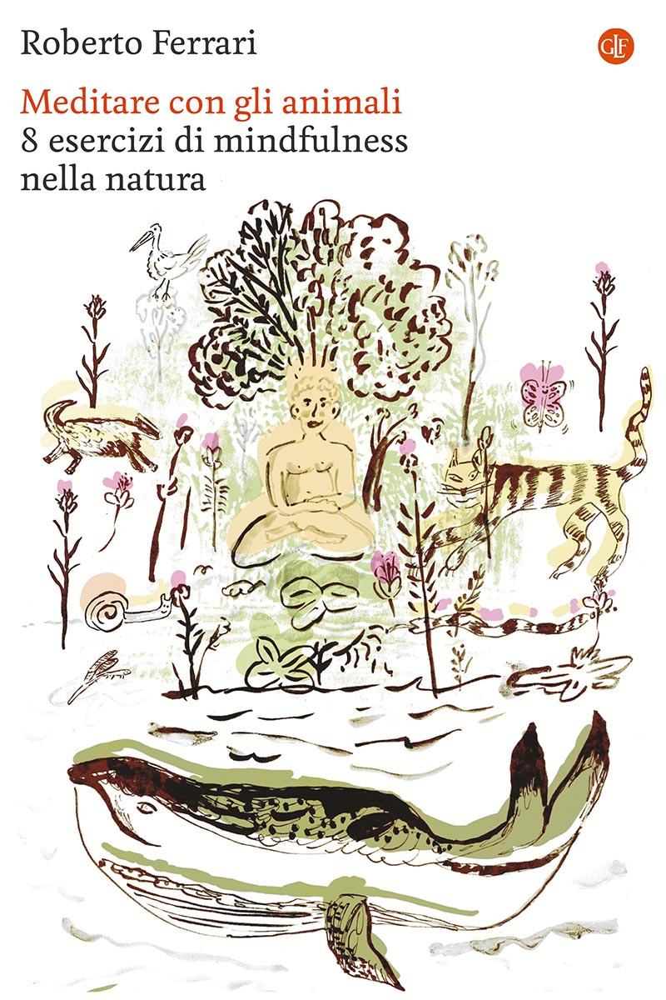
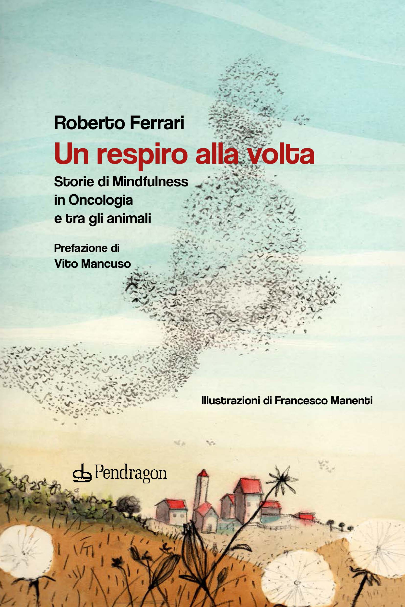
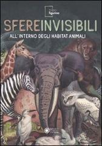
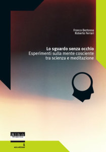
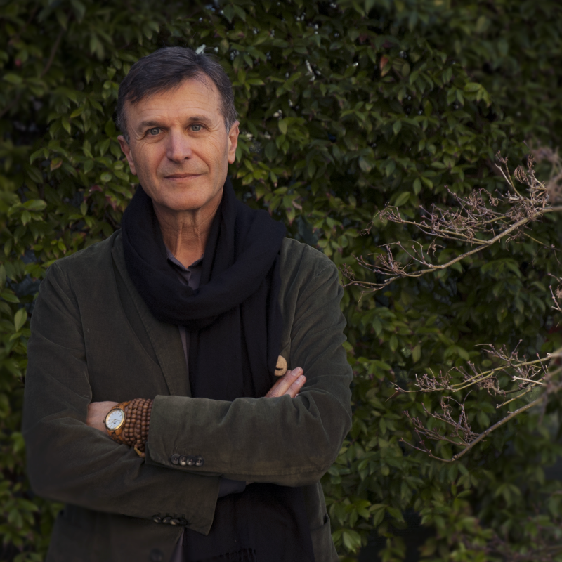

Se avessimo la facoltà di sbirciare dentro le menti silenziose degli animali, cosa potremmo imparare? Che cosa capiremmo su di noi e sulla vita? Un biologo e insegnante di meditazione ci guida in un esperimento straordinario, dove la scienza incontra la filosofia, la saggezza del Buddhismo e il silenzio della contemplazione. Un viaggio illuminante e ipnotico, che sa strapparci alle nostre certezze e avvicinarci al mistero irrisolto della coscienza umana e animale. Immaginiamo, per un istante, di poter provare quello che provano gli animali, di immedesimarci nel loro modo di sentire, sapere, agire nel mondo. È un esperimento unico nel suo genere a prendere forma nelle pagine di questo libro, un invito a calarci nei panni di esistenze pelose, squamate, pennute per guardare la realtà con occhi diversi. In compagnia di enormi balene e minuscole lumache, tartarughe e fenicotteri, tassi e lombrichi, scopriremo che ogni animale ha qualcosa di nuovo da insegnarci e ci parla con una voce capace di scardinare anche le nostre convinzioni più radicate. Queste otto immersioni nell’esperienza animale si rivelano così anche un percorso dentro noi stessi, un exercise per sgombrare la testa dalle categorie a cui siamo abituati e aprire nuovi scorci di riflessione. Ed è qui che le nozioni della scienza e della biologia si mescolano in maniera sorprendente con la filosofia orientale, la meditazione buddhista e la pratica della mindfulness. Quello di Roberto Ferrari è un approccio eccezionale, scientificamente rigoroso e, al tempo stesso, immaginifico, di chi ha passato trent’anni tra laboratori di ricerca e centri di meditazione. Un tentativo originale di de-antropizzare il mondo e vederlo da prospettive inedite, in grado di riaccendere in noi la meraviglia per l’esistente e il desiderio di prendercene cura.
Edizione: 2025, III rist. 2026 | Pagine: 176 | Collana: i Robinson / Letture | ISBN carta: 9788858158500 | ISBN digitale: 9788858159378 | Argomenti: Filosofia della religione e teologie, Scienze: storia e saggi

Di fronte al dolore fisico, vi sono persone che soffrono psichicamente più di altre e alcune che addirittura non soffrono neppure. La nostra mente, infatti, ha il potere di cambiare il rapporto con il dolore fisico e la sofferenza interiore, in senso positivo o negativo. Partendo da tali presupposti, Roberto Ferrari ha provato ad applicare la pratica della Mindfulness – metodo che permette di educare la mente a relazionarci con noi stessi – con gruppi di pazienti oncologici per provare ad alleviare la loro sofferenza attraverso la meditazione. Questo libro è dunque il resoconto di un intenso percorso nella mente e nelle emozioni di persone in forte difficoltà e riporta, in forma narrativa, attività, dialoghi, riflessioni e intuizioni dei partecipanti, realmente registrati durante gli incontri. Lo scopo è restituire le storie personali, le trasformazioni, la profonda empatia e anche la spiritualità dei pazienti, che solitamente non emergono dalle pubblicazioni scientifiche. A renderlo ancora più particolare è il fatto che alle storie sulla sofferenza umana affrontata dalla Mindfulness sono accostate storie di animali. È questo un meccanismo fondamentale per mostrare che i diversi modi in cui gli animali vedono e vivono il mondo lo rende inafferrabile. Il punto di vista umano così si relativizza, per approdare a un “sapere di non sapere”, una liberante condizione da cui nasce un vivo sentimento di empatia e di comunione con ogni forma di vita.
Prefazione di Vito Mancuso | Pagine: 249 | Uscita: 10-06-2021 | ISBN: 978-88-3364-341-0 | Collana: Varia - 337

Come percepiscono il mondo gli animali? La risposta a questa domanda si trova all'incrocio di discipline come la biologia e la speculazione filosofica. I dati del mondo sensibile raccolti dagli organi di senso danno vita a immagini mentali dell'ambiente circostante diverse per ogni specie animale, il cui mondo diventa così una "sfera invisibile" per tutte le altre, uomo compreso. I testi che compongono questo libro, catalogo dell'omonima mostra allestita dal Museo della Figurina di Modena in occasione del "festivalfilosofia" del 2011, guidano il lettore nella scoperta delle tesi di Jakob von Uexkull, il biologo tedesco ritenuto padre della moderna etologia, che per primo sottolineò il carattere soggettivo e creativo dell'esperienza che ogni specie animale fa del mondo. Non solo vista, tatto, olfatto, gusto e udito hanno infatti potenzialità diverse da specie a specie, ma esistono anche sensi ignoti all'uomo come la capacità di percepire la presenza di campi magnetici ed elettrici, che rendono impossibile pensare il mondo animale secondo una prospettiva antropocentrica. Le immagini della mostra, figurine di animali prodotte a partire dalla fine del XIX secolo, illustrano il testo. Con la loro ricchezza di particolari e le sofisticate scelte cromatiche sono allo stesso tempo spettacolari e divulgative: per decenni hanno svolto lo stesso ruolo che sarebbe poi stato dei documentari naturalistici.
Data di Pubblicazione: 17 giugno 2011 | EAN: 9788857004112 | ISBN: 8857004112 | Pagine: 160 | Formato: brossura | Argomenti: Animali selvatici: argomenti d'interesse generale, Cataloghi di mostre e specifiche collezioni

Franco Bertossa e Roberto Ferrari in questa ultima pubblicazione del CentroStudi ASIA ci guidano in un viaggio attraverso i più recenti studi scientifici e filosofici sulla coscienza e la mente umana, in compagnia degli esperimenti mentali di Matrix, il film di epistemologia popolare più stimolante di questi anni. Un viaggio fino alle radici della mente in oriente e occidente, in realtà una risalita a monte: prima dei pensieri, delle emozioni, delle sensazioni, prima delle spinte inconsce e della teorie sul cervello. Prima di questi anni e di questo mondo. Prima, e da sempre, è acceso lo sguardo che vede tutto questo. Ha una origine, un occhio? Lo sguardo si apre sul nostro mondo reale o virtuale? Lo sguardo è un fatto, sperimentabile. Indubitabile. È il luogo del nostro principio, l’ultima terra sconosciuta, l’unica reale. Chi è lo sguardo?
Pagine: 224 | ISBN: 88-89130-09-1 | Argomenti: Filosofia, Neuroscienze

Roberto Ferrari, biologo, ha svolto per trent’anni attività di ricerca nel campo degli insetti sociali e dell’etologia cognitiva presso l’Università di Bologna. È docente di Mindfulness al Master presso l’Università La Sapienza di Roma e insegna presso la Scuola di Psicoterapia “Nous” di Milano e la Scuola Superiore di Filosofia Orientale e Comparativa di Rimini. Ha fondato il Centro “Mente&Vita” presso l’associazione asia Modena, operando all’interno di progetti di ricerca sulla Mindfulness in ospedali con pazienti oncologici e personale sanitario, in scuole e carceri. Tra le sue pubblicazioni, Lo sguardo senz’occhio. Esperimenti sulla mente cosciente tra scienza e meditazione (con Franco Bertossa, Milano 2005), Sfere invisibili. All’interno degli habitat animali (Modena 2011) e Un respiro alla volta. Storie di mindfulness in Oncologia e tra gli animali (Bologna 2021).
© 2026 Roberto Ferrari.